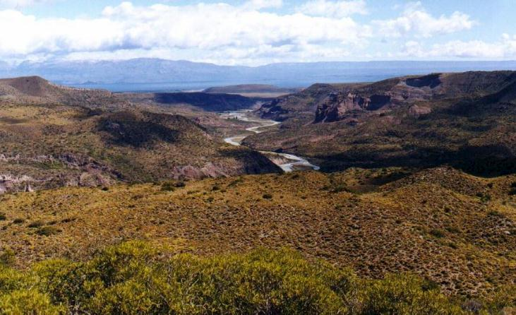

Camino al Monte Zeballps. Mirando hacia el Norte, el Rio Jeinemeni deja a la Rep. de Chile sobre el lado izquierdo.
A la distancia se ve el Lago Buenos Aires, a cuyo borde se halla Los Antiguos. Enero 2000